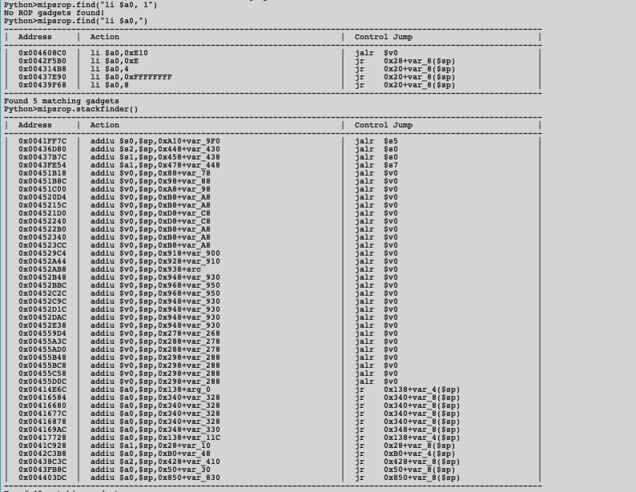

栈溢出利用技巧
xxxkkk@海特实验室
概述¶
因为 MIPS 指令集不同于 X86 指令集架构，所以在栈溢出的利用方式上有所差别，ROP 链的构造也不尽相同，这里概述一下关于 MIPS 栈溢出利用的技巧和特点。
常见寻找MIPS Gardget工具¶
- ROPgardget 最常见，最通用的全平台寻找Gardget工具
> ROPgadget --binary libc.so.6
......
0x00049298 : xori $v0, $v0, 2 ; sw $v0, 0x1c($sp) ; lw $t9, -0x6d14($gp) ; jalr $t9 ; addiu $a0, $sp, 0x20
0x000492f0 : xori $v0, $v0, 2 ; sw $v0, 8($s1) ; lw $v0, 0x38($sp) ; sw $v0, 4($s1) ; move $v0, $v1 ; lw $ra, 0x54($sp) ; lw $s2, 0x50($sp) ; lw $s1, 0x4c($sp) ; lw $s0, 0x48($sp) ; jr $ra ; addiu $sp, $sp, 0x58
0x000b03a4 : xori $v0, $v1, 0x1f ; movn $a3, $zero, $v0 ; addiu $a0, $zero, 4 ; lw $a1, -0x7fd8($gp) ; addiu $a1, $a1, 0x6c08 ; lw $a2, -0x7fd8($gp) ; lw $t9, -0x7940($gp) ; jalr $t9 ; addiu $a2, $a2, 0x6c40
0x00040708 : xori $v0, $v1, 1 ; addiu $v1, $zero, 1 ; xori $v0, $v1, 1 ; andi $v0, $v0, 0xff ; b 0x40780 ; andi $v1, $v0, 0xff ; move $a0, $a1 ; lw $t9, -0x6ebc($gp) ; jalr $t9 ; move $a1, $s1
0x00040710 : xori $v0, $v1, 1 ; andi $v0, $v0, 0xff ; b 0x40778 ; andi $v1, $v0, 0xff ; move $a0, $a1 ; lw $t9, -0x6ebc($gp) ; jalr $t9 ; move $a1, $s1
0x000d2dc4 : xori $v1, $a3, 8 ; lw $t9, -0x75f4($gp) ; jalr $t9 ; nop
0x000accbc : xori $v1, $fp, 1 ; addiu $a0, $zero, 0x1c ; addiu $v0, $zero, 2 ; movz $a0, $v0, $v1 ; lw $t9, -0x7fa4($gp) ; addiu $t9, $t9, -0x4748 ; jalr $t9 ; sw $a0, 0x44($sp)
0x000b941c : xori $v1, $v0, 1 ; addiu $v0, $zero, -1 ; movz $v0, $zero, $v1 ; lw $ra, 0x28($sp) ; jr $ra ; addiu $sp, $sp, 0x30
0x000b93ac : xori $v1, $v0, 1 ; addiu $v0, $zero, -1 ; movz $v0, $zero, $v1 ; lw $ra, 0x30($sp) ; jr $ra ; addiu $sp, $sp, 0x38
Unique gadgets found: 114925
IDA里面的插件，专门针对MIPS

优点：针对性强，有很多选项能找满足ROP要求的特定的Gardget 缺点：其他架构不行（名字就叫MIPS）
常见Gardget分析¶
为了了解MIPS下栈溢出的利用，首先得对MIPS的传参约定有一个基本的了解。
MIPS有32个通用寄存器（0-31），各寄存器的功能及汇编程序中使用约定如下

其中比较重要的是v0为函数返回值存放的寄存器，ra存在返回地址，a0-a3存在函数的四个调用参数，当需要使用更多的寄存器时，就需要堆栈（stack)了,需要注意的是MIPS编译器总是为参数在堆栈中留有空间以防有参数需要存储。
因此对于使用ROP进行一般的函数操作来说，寄存器的四个参数已经足够了，因此控制这个四个寄存器对于ROP来说比较关键。
通用的 gadget 段¶
在uclibc库中，有几个比较关键的gadget，在scandir的尾部或者scandir64的尾部，从图上看基本上可以设置所有寄存器值，从s0-s7

有一条比较常规的ROP链，执行的整体流程为 sleep(1) -> read_value_from_stack -> jump to stack(shellcode)
利用流程¶
首先寻找一个设置a0为常量的Gardget，可以使用MIPSRop寻找设置a0寄存器的Gardget
Python>mipsrop.find("li $a0,")
----------------------------------------------------------------------------------------------------------------
| Address | Action | Control Jump |
----------------------------------------------------------------------------------------------------------------
| 0x004608C0 | li $a0,0xE10 | jalr $v0 |
| 0x0042F5B0 | li $a0,0xE | jr 0x28+var_8($sp) |
| 0x004314B8 | li $a0,4 | jr 0x20+var_8($sp) |
| 0x00437E90 | li $a0,0xFFFFFFFF | jr 0x20+var_8($sp) |
| 0x00439F68 | li $a0,8 | jr 0x20+var_8($sp) |
----------------------------------------------------------------------------------------------------------------
Found 5 matching gadgets
LOAD:0001E20C move $t9, $s1
LOAD:0001E210 lw $ra, 0x28+var_4($sp)
LOAD:0001E214 lw $s2, 0x28+var_8($sp)
LOAD:0001E218 lw $s1, 0x28+var_C($sp)
LOAD:0001E21C lw $s0, 0x28+var_10($sp)
LOAD:0001E220 jr $t9
LOAD:0001E224 addiu $sp, 0x28
mipsrop.stackfinder()
----------------------------------------------------------------------------------------------------------------
| Address | Action | Control Jump |
----------------------------------------------------------------------------------------------------------------
| 0x0041FF7C | addiu $s0,$sp,0xA10+var_9F0 | jalr $s5 |
| 0x00436D80 | addiu $s2,$sp,0x448+var_430 | jalr $s0 |
| 0x00437B7C | addiu $s1,$sp,0x458+var_438 | jalr $s0 |
| 0x0043FE54 | addiu $a1,$sp,0x478+var_448 | jalr $s7 |
| 0x00451B18 | addiu $v0,$sp,0x88+var_78 | jalr $v0 |
| 0x00451B8C | addiu $v0,$sp,0x98+var_88 | jalr $v0 |
| 0x00451C00 | addiu $v0,$sp,0xA8+var_98 | jalr $v0 |
| 0x004520D4 | addiu $v0,$sp,0xB8+var_A8 | jalr $v0 |
| 0x0045215C | addiu $v0,$sp,0xB8+var_A8 | jalr $v0 |
| 0x004521D0 | addiu $v0,$sp,0xD8+var_C8 | jalr $v0 |
| 0x00452240 | addiu $v0,$sp,0xD8+var_C8 | jalr $v0 |
| 0x004522B0 | addiu $v0,$sp,0xB8+var_A8 | jalr $v0 |
| 0x00452340 | addiu $v0,$sp,0xB8+var_A8 | jalr $v0 |
| 0x004523CC | addiu $v0,$sp,0xB8+var_A8 | jalr $v0 |
| 0x004529C4 | addiu $v0,$sp,0x918+var_900 | jalr $v0 |
| 0x00452A44 | addiu $v0,$sp,0x928+var_910 | jalr $v0 |
| 0x00452AB8 | addiu $v0,$sp,0x938+src | jalr $v0 |
| 0x00452B48 | addiu $v0,$sp,0x948+var_930 | jalr $v0 |
| 0x00452BBC | addiu $v0,$sp,0x968+var_950 | jalr $v0 |
| 0x00452C2C | addiu $v0,$sp,0x968+var_950 | jalr $v0 |
| 0x00452C9C | addiu $v0,$sp,0x948+var_930 | jalr $v0 |
| 0x00452D1C | addiu $v0,$sp,0x948+var_930 | jalr $v0 |
| 0x00452DAC | addiu $v0,$sp,0x948+var_930 | jalr $v0 |
| 0x00452E38 | addiu $v0,$sp,0x948+var_930 | jalr $v0 |
| 0x004559D4 | addiu $v0,$sp,0x278+var_268 | jalr $v0 |
| 0x00455A3C | addiu $v0,$sp,0x288+var_278 | jalr $v0 |
| 0x00455AD0 | addiu $v0,$sp,0x288+var_278 | jalr $v0 |
| 0x00455B48 | addiu $v0,$sp,0x298+var_288 | jalr $v0 |
| 0x00455BC8 | addiu $v0,$sp,0x298+var_288 | jalr $v0 |
| 0x00455C58 | addiu $v0,$sp,0x298+var_288 | jalr $v0 |
| 0x00455D0C | addiu $v0,$sp,0x298+var_288 | jalr $v0 |
| 0x00414E6C | addiu $a0,$sp,0x138+arg_0 | jr 0x138+var_4($sp) |
| 0x00416584 | addiu $a0,$sp,0x340+var_328 | jr 0x340+var_8($sp) |
| 0x00416680 | addiu $a0,$sp,0x340+var_328 | jr 0x340+var_8($sp) |
| 0x0041677C | addiu $a0,$sp,0x340+var_328 | jr 0x340+var_8($sp) |
| 0x00416878 | addiu $a0,$sp,0x340+var_328 | jr 0x340+var_8($sp) |
| 0x004169AC | addiu $a0,$sp,0x348+var_330 | jr 0x348+var_8($sp) |
| 0x00417728 | addiu $a0,$sp,0x138+var_11C | jr 0x138+var_4($sp) |
| 0x0041C928 | addiu $a1,$sp,0x28+var_10 | jr 0x28+var_8($sp) |
| 0x0042C3B8 | addiu $a0,$sp,0xB0+var_48 | jr 0xB0+var_4($sp) |
| 0x00438C3C | addiu $a2,$sp,0x428+var_410 | jr 0x428+var_8($sp) |
| 0x0043FB8C | addiu $a0,$sp,0x50+var_30 | jr 0x50+var_8($sp) |
| 0x004403DC | addiu $a0,$sp,0x850+var_830 | jr 0x850+var_8($sp) |
----------------------------------------------------------------------------------------------------------------
Found 43 matching gadgets
mipsrop.find("move $t9, $s2")
----------------------------------------------------------------------------------------------------------------
| Address | Action | Control Jump |
----------------------------------------------------------------------------------------------------------------
| 0x0001C890 | move $t9,$s2 | jalr $s2 |
| 0x0001C8AC | move $t9,$s2 | jalr $s2 |
| 0x0001C8E0 | move $t9,$s2 | jalr $s2 |
| 0x0001C914 | move $t9,$s2 | jalr $s2 |
| 0x0001CB40 | move $t9,$s2 | jalr $s2 |
| 0x0001DC58 | move $t9,$s2 | jalr $s2 |
| 0x0001DC6C | move $t9,$s2 | jalr $s2 |
| 0x0002A89C | move $t9,$s2 | jalr $s2 |
| 0x0002A8B4 | move $t9,$s2 | jalr $s2 |
| 0x00043398 | move $t9,$s2 | jalr $s2 |
| 0x00047458 | move $t9,$s2 | jalr $s2 |
| 0x00047474 | move $t9,$s2 | jalr $s2 |
| 0x00053110 | move $t9,$s2 | jalr $s2 |
| 0x00053648 | move $t9,$s2 | jalr $s2 |
| 0x0005371C | move $t9,$s2 | jalr $s2 |
| 0x000556A8 | move $t9,$s2 | jalr $s2 |
| 0x000556CC | move $t9,$s2 | jalr $s2 |
| 0x00055768 | move $t9,$s2 | jalr $s2 |
| 0x0005578C | move $t9,$s2 | jalr $s2 |
| 0x0005674C | move $t9,$s2 | jalr $s2 |
| 0x00056770 | move $t9,$s2 | jalr $s2 |
| 0x0005680C | move $t9,$s2 | jalr $s2 |
| 0x00056830 | move $t9,$s2 | jalr $s2 |
| 0x00057B24 | move $t9,$s2 | jalr $s2 |
| 0x000580C4 | move $t9,$s2 | jalr $s2 |
| 0x00058E9C | move $t9,$s2 | jalr $s2 |
| 0x00058EC0 | move $t9,$s2 | jalr $s2 |
| 0x00058F5C | move $t9,$s2 | jalr $s2 |
| 0x00058F80 | move $t9,$s2 | jalr $s2 |
| 0x0005A064 | move $t9,$s2 | jalr $s2 |
| 0x0005A4C0 | move $t9,$s2 | jalr $s2 |
| 0x0005AA4C | move $t9,$s2 | jalr $s2 |
| 0x0005AF30 | move $t9,$s2 | jalr $s2 |
| 0x0005BD14 | move $t9,$s2 | jalr $s2 |
| 0x0005BD40 | move $t9,$s2 | jalr $s2 |
| 0x0005D4AC | move $t9,$s2 | jalr $s2 |
| 0x0005D4F0 | move $t9,$s2 | jalr $s2 |
| 0x0005DDCC | move $t9,$s2 | jalr $s2 |
| 0x0005DDF8 | move $t9,$s2 | jalr $s2 |
| 0x0005E37C | move $t9,$s2 | jalr $s2 |
| 0x0006052C | move $t9,$s2 | jalr $s2 |
| 0x00060548 | move $t9,$s2 | jalr $s2 |
| 0x00060564 | move $t9,$s2 | jalr $s2 |
| 0x00062888 | move $t9,$s2 | jalr $s2 |
| 0x0006D8F8 | move $t9,$s2 | jalr $s2 |
| 0x000765E4 | move $t9,$s2 | jalr $s2 |
| 0x000766B0 | move $t9,$s2 | jalr $s2 |
| 0x00078720 | move $t9,$s2 | jalr $s2 |
| 0x0007A23C | move $t9,$s2 | jalr $s2 |
| 0x0007A2C4 | move $t9,$s2 | jalr $s2 |
| 0x0008EE68 | move $t9,$s2 | jalr $s2 |
| 0x0008F30C | move $t9,$s2 | jalr $s2 |
| 0x0009453C | move $t9,$s2 | jalr $s2 |
| 0x0009457C | move $t9,$s2 | jalr $s2 |
| 0x00098264 | move $t9,$s2 | jalr $s2 |
| 0x000AF9E8 | move $t9,$s2 | jalr $s2 |
| 0x000B088C | move $t9,$s2 | jalr $s2 |
| 0x000B4148 | move $t9,$s2 | jalr $s2 |
| 0x000B46BC | move $t9,$s2 | jalr $s2 |
| 0x000B471C | move $t9,$s2 | jalr $s2 |
| 0x000BCF18 | move $t9,$s2 | jalr $s2 |
| 0x000BCFF0 | move $t9,$s2 | jalr $s2 |
| 0x000BD01C | move $t9,$s2 | jalr $s2 |
| 0x000DB248 | move $t9,$s2 | jalr $s2 |
| 0x000DB3F4 | move $t9,$s2 | jalr $s2 |
| 0x000DB4C8 | move $t9,$s2 | jalr $s2 |
| 0x000DB6DC | move $t9,$s2 | jalr $s2 |
| 0x000DB838 | move $t9,$s2 | jalr $s2 |
| 0x000DBA34 | move $t9,$s2 | jalr $s2 |
| 0x000DBC24 | move $t9,$s2 | jalr $s2 |
| 0x000DBDE8 | move $t9,$s2 | jalr $s2 |
| 0x000DBF74 | move $t9,$s2 | jalr $s2 |
| 0x000E5D88 | move $t9,$s2 | jalr $s2 |
| 0x000E5DA0 | move $t9,$s2 | jalr $s2 |
----------------------------------------------------------------------------------------------------------------
ROPgadget --binary libc.so.6 | grep "move \$t9, \$s"，可以看到类似这些的gardget
move $t9, $s0 ; jalr $t9 ; addiu $a0, $sp, 0x38
move $t9, $s0 ; jalr $t9 ; addiu $a0, $sp, 0x34
move $t9, $s1 ; jalr $t9 ; move $a0, $s0
addiu $s0, $sp, 0x94 ;即可
还有比较好的是类似这样的：
addiu $s0, $sp, 0x94 ; lw $t9, -0x7718($gp) ; jalr $t9 ; move $a0, $s0
- 但是个人推荐使用前一种通过执行 shellcode 来反弹 shell 的方式，MIPS 指令集无法开启 NX，所以使用这种方式比较方便。使用第二种执行 system 命令，如
sysetm("telentd -p 123 -l /bin/sh")的方法，可能因为参数控制不好的原因出现各种各样的问题。
关于调用 sleep 函数的原因¶
因为 MIPS 流水线指令集的特点，存在 cache incoherency 的特性，需要手动调用 sleep 函数，将数据区刷新到指令区当中去，从而可以正常执行 shellcode。如下图：